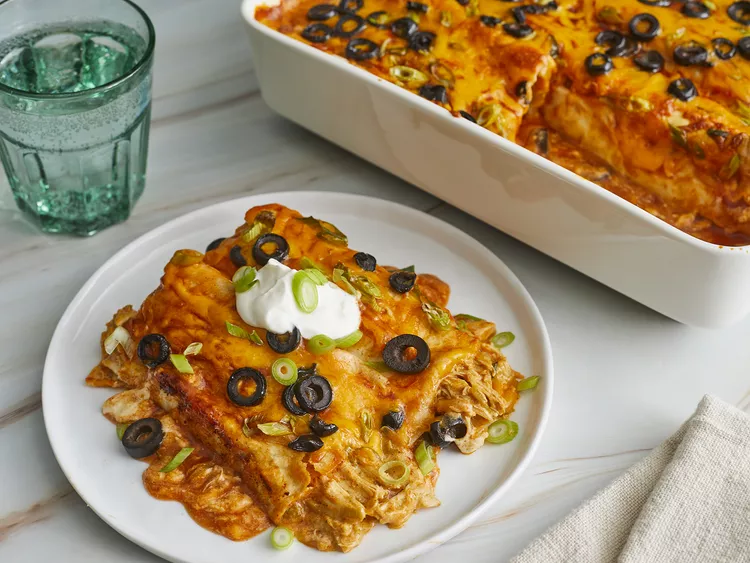

Place chicken into a large pot and add water to cover. Bring to a boil over high heat, then reduce the heat to medium-low, cover, and simmer until chicken is no longer pink and the juices run clear, about 10 minutes.
Remove from the pot and let sit until cool enough to handle, 5 to 10 minutes. Shred chicken with two forks.
Combine sour cream, condensed soup, and chili powder in a saucepan. Bring to a simmer, stirring occasionally, then turn off the heat and cover to keep warm.
At the same time, melt butter in a skillet over medium heat. Add onion; cook and stir until translucent, about 5 minutes. Add shredded chicken, water, 1/2 of the green onions, green chiles, and taco seasoning; simmer for 10 minutes. Stir in lime juice, onion powder, and garlic powder; simmer for 10 more minutes.
Preheat the oven to 350 degrees F (175 degrees C).
Stir 1 cup soup mixture into the skillet with the chicken. Spread remaining soup mixture over the bottom of a 9x13-inch baking dish.
Fill each tortilla with 1/5 of the chicken mixture and about 5 tablespoons Cheddar cheese.

Roll tortillas around filling and place enchiladas, seam-side down, into the baking dish. Pour enchilada sauce over top and sprinkle with remaining Cheddar, remaining green onions, and olives.

Bake in the preheated oven until filling is heated through and cheese is melted and bubbling, about 25 minutes.
